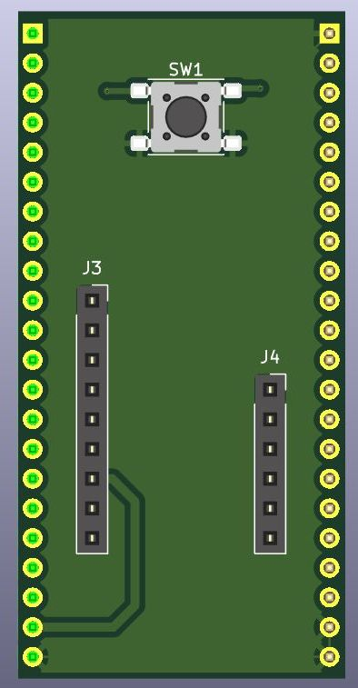

This project template is the base of an adapter used to connect a CPU to the ESP32 Bit Pirate Dock.
The adapter is the size of the ESP32S3 devkit
The board outline looks like the following:

2026 fdufnews
ESP32 Bit Pirate Dock project